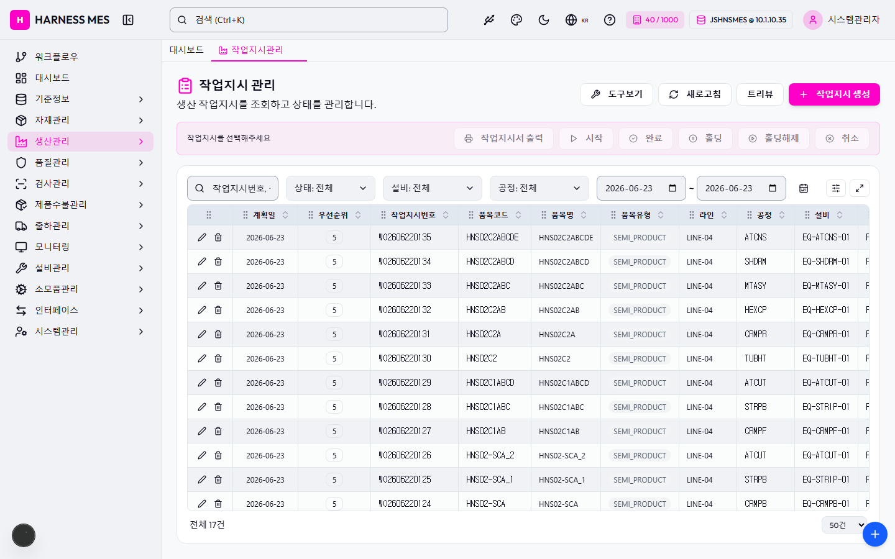

Route: /production/order
Status: PASS / HTTP 200
| 기능/버튼 | 처리 방식 | 상태 | 비고 |
|---|---|---|---|
| 화면 로드 | GET /production/order | 실행 | HTTP 200 |
| 라우트 prewarm | 직접 HTTP 확인 | 실행 | HTTP 200, 51182ms |
| 초기 API 호출 | 브라우저 네트워크 수집 | 실행 | 14건 |
| 🇰🇷 | 화면 버튼 목록화 | 목록화 | 후속 메뉴별 세부 시나리오 실행 대상 |
| 시스템관리자 | 화면 버튼 목록화 | 목록화 | 후속 메뉴별 세부 시나리오 실행 대상 |
| 워크플로우 | 화면 버튼 목록화 | 목록화 | 후속 메뉴별 세부 시나리오 실행 대상 |
| 대시보드 | 화면 버튼 목록화 | 목록화 | 후속 메뉴별 세부 시나리오 실행 대상 |
| 기준정보 | 화면 버튼 목록화 | 목록화 | 후속 메뉴별 세부 시나리오 실행 대상 |
| 자재관리 | 화면 버튼 목록화 | 목록화 | 후속 메뉴별 세부 시나리오 실행 대상 |
| 생산관리 | 화면 버튼 목록화 | 목록화 | 후속 메뉴별 세부 시나리오 실행 대상 |
| 품질관리 | 화면 버튼 목록화 | 목록화 | 후속 메뉴별 세부 시나리오 실행 대상 |
| 검사관리 | 화면 버튼 목록화 | 목록화 | 후속 메뉴별 세부 시나리오 실행 대상 |
| 제품수불관리 | 화면 버튼 목록화 | 목록화 | 후속 메뉴별 세부 시나리오 실행 대상 |
| 출하관리 | 화면 버튼 목록화 | 목록화 | 후속 메뉴별 세부 시나리오 실행 대상 |
| 모니터링 | 화면 버튼 목록화 | 목록화 | 후속 메뉴별 세부 시나리오 실행 대상 |
| 설비관리 | 화면 버튼 목록화 | 목록화 | 후속 메뉴별 세부 시나리오 실행 대상 |
| 소모품관리 | 화면 버튼 목록화 | 목록화 | 후속 메뉴별 세부 시나리오 실행 대상 |
| 인터페이스 | 화면 버튼 목록화 | 목록화 | 후속 메뉴별 세부 시나리오 실행 대상 |
| 시스템관리 | 화면 버튼 목록화 | 목록화 | 후속 메뉴별 세부 시나리오 실행 대상 |
| 작업지시관리 | 화면 버튼 목록화 | 목록화 | 후속 메뉴별 세부 시나리오 실행 대상 |
| 도구보기 | 화면 버튼 목록화 | 목록화 | 후속 메뉴별 세부 시나리오 실행 대상 |
| 새로고침 | 화면 버튼 목록화 | 목록화 | 후속 메뉴별 세부 시나리오 실행 대상 |
| 트리뷰 | 화면 버튼 목록화 | 목록화 | 후속 메뉴별 세부 시나리오 실행 대상 |
| 작업지시 생성 | 화면 버튼 목록화 | 목록화 | 후속 메뉴별 세부 시나리오 실행 대상 |
| 작업지시서 출력 | 화면 버튼 목록화 | 목록화 | 후속 메뉴별 세부 시나리오 실행 대상 |
| 시작 | 화면 버튼 목록화 | 목록화 | 후속 메뉴별 세부 시나리오 실행 대상 |
| 완료 | 화면 버튼 목록화 | 목록화 | 후속 메뉴별 세부 시나리오 실행 대상 |
| 홀딩 | 화면 버튼 목록화 | 목록화 | 후속 메뉴별 세부 시나리오 실행 대상 |
| 홀딩해제 | 화면 버튼 목록화 | 목록화 | 후속 메뉴별 세부 시나리오 실행 대상 |
| 취소 | 화면 버튼 목록화 | 목록화 | 후속 메뉴별 세부 시나리오 실행 대상 |
| 전체화면 보기 | 화면 버튼 목록화 | 목록화 | 후속 메뉴별 세부 시나리오 실행 대상 |
| AI 채팅 | 화면 버튼 목록화 | 목록화 | 후속 메뉴별 세부 시나리오 실행 대상 |
| 개선요청 등록 | 화면 버튼 목록화 | 목록화 | 후속 메뉴별 세부 시나리오 실행 대상 |
| 입력 필드 | DOM 수집 | 목록화 | 4개 |
| 선택 필드 | DOM 수집 | 목록화 | 4개 |
| 목록/그리드 | DOM 수집 | 목록화 | table 1, grid 0 |
| Method | URL | Status | OK |
|---|---|---|---|
| GET | /api/health | 200 | OK |
| GET | /api/db-info | 200 | OK |
| GET | /api/health | 200 | OK |
| GET | /api/db-info | 200 | OK |
| GET | /api/db-info | 200 | OK |
| GET | /api/system/configs/active | 200 | OK |
| GET | /api/auth/me | 200 | OK |
| GET | /api/equipment/equips/metadata/processes | 200 | OK |
| GET | /api/master/com-codes/all-active | 200 | OK |
| GET | /api/ai/page-tools/production.order | 200 | OK |
| GET | /api/equipment/equips?limit=200 | 200 | OK |
| GET | /api/production/job-orders?limit=5000&planDateFrom=2026-06-23&planDateTo=2026-06-23 | 200 | OK |
| GET | /api/system/comm-configs?commType=SERIAL&useYn=Y | 200 | OK |
| GET | /api/menu-categories/tree | 200 | OK |
requestfailed: GET /api/master/companies/public net::ERR_ABORTED

H HARNESS MES 🇰🇷 40 / 1000 JSHNSMES @ 10.1.10.35 시스템관리자 워크플로우 대시보드 기준정보 자재관리 생산관리 품질관리 검사관리 제품수불관리 출하관리 모니터링 설비관리 소모품관리 인터페이스 시스템관리 대시보드 작업지시관리 작업지시 관리 생산 작업지시를 조회하고 상태를 관리합니다. 도구보기 새로고침 트리뷰 작업지시 생성 작업지시를 선택해주세요 작업지시서 출력 시작 완료 홀딩 홀딩해제 취소 상태: 전체 상태: 대기 상태: 진행중 상태: 홀딩 상태: 완료 상태: 취소 설비: 전체 설비: EQ-AINSP-01 - 통합검사 설비 #1 설비: EQ-AINSP-02 - 통합검사 설비 #2 설비: EQ-ATCNS-01 - 자동절단탈피 설비 #1 설비: EQ-ATCNS-02 - 자동절단탈피 설비 #2 설비: EQ-ATCUT-01 - 자동절단 설비 #1 설비: EQ-ATCUT-02 - 자동절단 설비 #2 설비: EQ-AUXMT-01 - 부자재장착 설비 #1 설비: EQ-CRIMP-01 - 자동압착기 #1 설비: EQ-CRIMP-02 - 자동압착기 #2 설비: EQ-CRIMP-03 - 반자동압착기 #1 설비: EQ-CRMPB-01 - 양단압착 설비 #1 설비: EQ-CRMPB-02 - 양단압착 설비 #2 설비: EQ-CRMPF-01 - 전단압착 설비 #1 설비: EQ-CRMPF-02 - 전단압착 설비 #2 설비: EQ-CRMPR-01 - 후단압착 설비 #1 설비: EQ-CRMPR-02 - 후단압착 설비 #2 설비: EQ-CUT-01 - 자동절단기 #1 설비: EQ-CUT-02 - 자동절단기 #2 설비: EQ-HEXCP-01 - 육각압착 설비 #1 설비: EQ-HEXCP-02 - 육각압착 설비 #2 설비: EQ-MASSY-01 - 조립 설비 #1 설비: EQ-MTASY-01 - 자재장착 설비 #1 설비: EQ-OINSP-01 - 외관검사 설비 #1 설비: EQ-OINSP-02 - 외관검사 설비 #2 설비: EQ-PRC-CRIMP-01 - 압착 설비 #1 설비: EQ-PRC-CRIMP-02 - 압착 설비 #2 설비: EQ-PRC-CUT-01 - 절단 설비 #1 설비: EQ-PRC-CUT-02 - 절단 설비 #2 설비: EQ-PRC-STRIP-01 - 탈피 설비 #1 설비: EQ-PRC-STRIP-02 - 탈피 설비 #2 설비: EQ-PRC-TEST-01 - 도통검사 설비 #1 설비: EQ-PRC